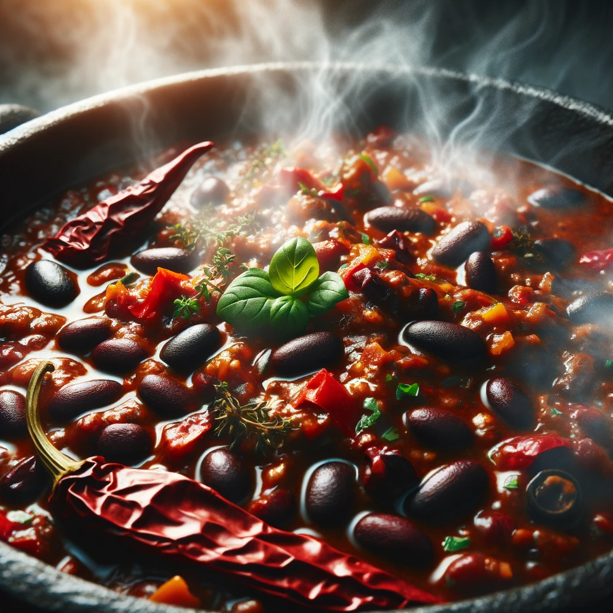

Ingredients
- 1 lb ground rat or 1 lb ground bat (whichever you prefer)
- 1 cup of your favorite elixer
-
3-4 and assortment of moonbell peppers (try finding the ones that make
the loudest bell sound)
- 1 can of kidney beans (made from actual kidneys)
- 1 can of black eyed peas (the ones with actual eyes)
-
4 teaspoons of spice mix from the secret spice bazaar (talk to bob)
- 1 teaspoon salt from frog tears
- 2 large shadowroots
- 1 breath of a dragon
- ... and a can of rotel should do
Instructions
-
In your cauldron, add your meat, shadowroots, moonbell peppers. Cook
till softened and incorporate your dragon's breath.
-
Add your elixer, spices from the bazaar that you got from bob, frog tear
salt... and the rotel. Combine.
-
Add your kidney beans (again, the ones made with real kidneys, no fake
stuff here), black eyed peas(same thing as with the kidney beans), and
mix.
- Cook until the mixture changes from green to red.